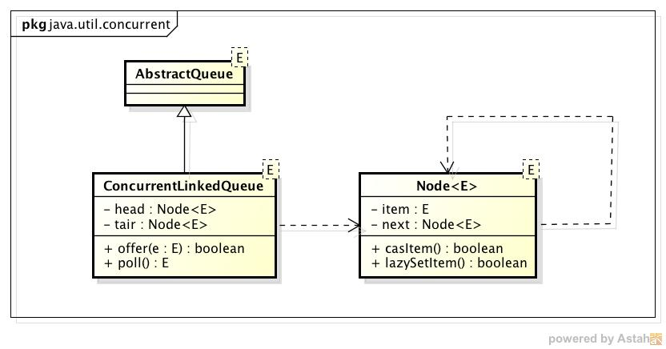
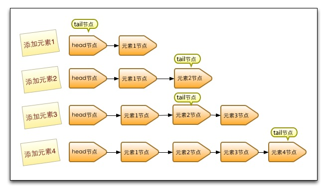
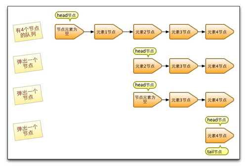

本文是作者原创，首发于InfoQ：http://www.infoq.com/cn/articles/ConcurrentLinkedQueue
1. 引言
在并发编程中我们有时候需要使用线程安全的队列。如果我们要实现一个线程安全的队列有两种实现方式一种是使用阻塞算法，另一种是使用非阻塞算法。使用阻塞算法的队列可以用一个锁（入队和出队用同一把锁）或两个锁（入队和出队用不同的锁）等方式来实现，而非阻塞的实现方式则可以使用循环CAS的方式来实现，本文让我们一起来研究下Doug Lea是如何使用非阻塞的方式来实现线程安全队列ConcurrentLinkedQueue的，相信从大师身上我们能学到不少并发编程的技巧。
2. ConcurrentLinkedQueue的介绍
ConcurrentLinkedQueue是一个基于链接节点的无界线程安全队列，它采用先进先出的规则对节点进行排序，当我们添加一个元素的时候，它会添加到队列的尾部，当我们获取一个元素时，它会返回队列头部的元素。它采用了“wait－free”算法来实现，该算法在Michael & Scott算法上进行了一些修改, Michael & Scott算法的详细信息可以参见参考资料一。
3. ConcurrentLinkedQueue的结构
我们通过ConcurrentLinkedQueue的类图来分析一下它的结构。

（图1）
ConcurrentLinkedQueue由head节点和tair节点组成，每个节点（Node）由节点元素（item）和指向下一个节点的引用(next)组成，节点与节点之间就是通过这个next关联起来，从而组成一张链表结构的队列。默认情况下head节点存储的元素为空，tair节点等于head节点。
1 | private transient volatile Node<e> tail = head; |
4. 入队列
入队列就是将入队节点添加到队列的尾部。为了方便理解入队时队列的变化，以及head节点和tair节点的变化，每添加一个节点我就做了一个队列的快照图。

（图二）
- 第一步添加元素1。队列更新head节点的next节点为元素1节点。又因为tail节点默认情况下等于head节点，所以它们的next节点都指向元素1节点。
- 第二步添加元素2。队列首先设置元素1节点的next节点为元素2节点，然后更新tail节点指向元素2节点。
- 第三步添加元素3，设置tail节点的next节点为元素3节点。
- 第四步添加元素4，设置元素3的next节点为元素4节点，然后将tail节点指向元素4节点。
通过debug入队过程并观察head节点和tail节点的变化，发现入队主要做两件事情，第一是将入队节点设置成当前队列尾节点的下一个节点。第二是更新tail节点，如果tail节点的next节点不为空，则将入队节点设置成tail节点，如果tail节点的next节点为空，则将入队节点设置成tail的next节点，所以tail节点不总是尾节点，理解这一点对于我们研究源码会非常有帮助。
上面的分析让我们从单线程入队的角度来理解入队过程，但是多个线程同时进行入队情况就变得更加复杂，因为可能会出现其他线程插队的情况。如果有一个线程正在入队，那么它必须先获取尾节点，然后设置尾节点的下一个节点为入队节点，但这时可能有另外一个线程插队了，那么队列的尾节点就会发生变化，这时当前线程要暂停入队操作，然后重新获取尾节点。让我们再通过源码来详细分析下它是如何使用CAS算法来入队的。
01 | public boolean offer(E e) { |
03 | if (e == null) throw new NullPointerException(); |
07 | Node</e><e> n = new Node</e><e>(e); |
23 | for (int hops = 0; ; hops++) { |
27 | Node</e><e> next = succ(p); |
35 | if (hops > HOPS && t != tail) |
45 | else if (p.casNext(null, n)) { |
从源代码角度来看整个入队过程主要做二件事情。第一是定位出尾节点，第二是使用CAS算法能将入队节点设置成尾节点的next节点，如不成功则重试。
第一步定位尾节点。tail节点并不总是尾节点，所以每次入队都必须先通过tail节点来找到尾节点，尾节点可能就是tail节点，也可能是tail节点的next节点。代码中循环体中的第一个if就是判断tail是否有next节点，有则表示next节点可能是尾节点。获取tail节点的next节点需要注意的是p节点等于p的next节点的情况，只有一种可能就是p节点和p的next节点都等于空，表示这个队列刚初始化，正准备添加第一次节点，所以需要返回head节点。获取p节点的next节点代码如下
1 | final Node</e><e> succ(Node</e><e> p) { |
3 | Node</e><e> next = p.getNext(); |
5 | return (p == next) ? head : next; |
第二步设置入队节点为尾节点。p.casNext(null, n)方法用于将入队节点设置为当前队列尾节点的next节点，p如果是null表示p是当前队列的尾节点，如果不为null表示有其他线程更新了尾节点，则需要重新获取当前队列的尾节点。
hops的设计意图。上面分析过对于先进先出的队列入队所要做的事情就是将入队节点设置成尾节点，doug lea写的代码和逻辑还是稍微有点复杂。那么我用以下方式来实现行不行？
01 | public boolean offer(E e) { |
05 | throw new NullPointerException(); |
07 | Node</e><e> n = new Node</e><e>(e); |
13 | if (t.casNext(null, n) && casTail(t, n)) { |
让tail节点永远作为队列的尾节点，这样实现代码量非常少，而且逻辑非常清楚和易懂。但是这么做有个缺点就是每次都需要使用循环CAS更新tail节点。如果能减少CAS更新tail节点的次数，就能提高入队的效率，所以doug lea使用hops变量来控制并减少tail节点的更新频率，并不是每次节点入队后都将 tail节点更新成尾节点，而是当 tail节点和尾节点的距离大于等于常量HOPS的值（默认等于1）时才更新tail节点，tail和尾节点的距离越长使用CAS更新tail节点的次数就会越少，但是距离越长带来的负面效果就是每次入队时定位尾节点的时间就越长，因为循环体需要多循环一次来定位出尾节点，但是这样仍然能提高入队的效率，因为从本质上来看它通过增加对volatile变量的读操作来减少了对volatile变量的写操作，而对volatile变量的写操作开销要远远大于读操作，所以入队效率会有所提升。
1 | private static final int HOPS = 1; |
还有一点需要注意的是入队方法永远返回true，所以不要通过返回值判断入队是否成功。
5. 出队列
出队列的就是从队列里返回一个节点元素，并清空该节点对元素的引用。让我们通过每个节点出队的快照来观察下head节点的变化。

从上图可知，并不是每次出队时都更新head节点，当head节点里有元素时，直接弹出head节点里的元素，而不会更新head节点。只有当head节点里没有元素时，出队操作才会更新head节点。这种做法也是通过hops变量来减少使用CAS更新head节点的消耗，从而提高出队效率。让我们再通过源码来深入分析下出队过程。
09 | for (int hops = 0;; hops++) { |
17 | if (item != null && p.casItem(item, null)) { |
23 | Node</e><e> q = p.getNext(); |
25 | updateHead(h, (q != null) ? q : p); |
35 | Node</e><e> next = succ(p); |
首先获取头节点的元素，然后判断头节点元素是否为空，如果为空，表示另外一个线程已经进行了一次出队操作将该节点的元素取走，如果不为空，则使用CAS的方式将头节点的引用设置成null，如果CAS成功，则直接返回头节点的元素，如果不成功，表示另外一个线程已经进行了一次出队操作更新了head节点，导致元素发生了变化，需要重新获取头节点。
6. 参考资料
文章的脚注信息由WordPress的wp-posturl插件自动生成
花名清英，并发网创始人，蚂蚁金服技术专家。目前工作于支付宝微贷事业部，关注互联网金融，并发编程和敏捷实践。
Latest posts by 方 腾飞 (see all)


{kind=link}
{kind=link}
分析的很详细 学习啦
想请教个问题，为什么大家说这是wait-free的？
wait-free的定义是：程序可以在有限步之内结束，而不管其它线程的相对速度如何。
但是，例如：某线程执行offer操作，同时有很多线程也执行offer，导致该线程一直CAS（p.casNext(null, n)失败），那么该线程无法保证在有限步内结束，我觉得这里更像是lock-free，因为它只保证了，总有一个线程成功了，整体在推进
好问题。我是参考了JDK的API文档。更详细的解释可以参考＝》http://rethinkdb.com/blog/lock-free-vs-wait-free-concurrency/，有兴趣的话可以翻译出来在并发网发表。